الطول الموجي لا يساوي الضغط: دوال المساهمة الرأسية وآثارها في رسم خرائط المشتريات الحارة
الملخص
تتيح تغيرات الطور متعددة الحزم من حيث المبدأ استنتاج توزيعات
درجة الحرارة الطولية للكواكب بوصفها دالة في الارتفاع ضمن
غلافها الجوي. فعلى سبيل المثال، ينشأ الانبعاث عند 3.6  m
من طبقات أعمق في الغلاف الجوي مما ينشأ عند 4.5
m
من طبقات أعمق في الغلاف الجوي مما ينشأ عند 4.5  m بسبب
ازدياد امتصاص بخار الماء عند الطول الموجي الأطول. وبما أن كفاءة
نقل الحرارة تزداد مع الضغط، نتوقع أن تبدي منحنيات الطور الحرارية
عند 3.6
m بسبب
ازدياد امتصاص بخار الماء عند الطول الموجي الأطول. وبما أن كفاءة
نقل الحرارة تزداد مع الضغط، نتوقع أن تبدي منحنيات الطور الحرارية
عند 3.6  m مطال أصغر وإزاحات طورية أكبر
مما هي عليه عند 4.5
m مطال أصغر وإزاحات طورية أكبر
مما هي عليه عند 4.5  m، غير أن هذا الاتجاه غير مرصود. ومن بين
المشتريات الحارة السبعة التي لها منحنيات طور لمدار كامل عند 3.6 و4.5
m، غير أن هذا الاتجاه غير مرصود. ومن بين
المشتريات الحارة السبعة التي لها منحنيات طور لمدار كامل عند 3.6 و4.5  m،
تملك جميعها مطال طور أكبر عند 3.6
m،
تملك جميعها مطال طور أكبر عند 3.6  m منه عند 4.5
m منه عند 4.5  m،
في حين تبدي أربعة من السبعة إزاحة طورية أكبر عند 3.6
m،
في حين تبدي أربعة من السبعة إزاحة طورية أكبر عند 3.6  m. نستخدم
نموذجًا إشعاعيًا-هيدروديناميكيًا 3D لحساب منحنيات الطور النظرية
لـ HD 189733b، بافتراض الاتزان الحراري-الكيميائي. ويظهر النموذج
عتامة تعتمد على درجة الحرارة والضغط والطول الموجي، وتدفعها أساسًا
كيمياء الكربون: إذ يكون CO مفضلًا طاقيًا على جانب النهار، في حين
يكون CH4 مفضلًا على جانب الليل الأبرد. لذلك تتغير العتامة
تحت الحمراء بمراتب مقدارية بين النهار والليل، مولدةً انتقالات رأسية
درامية في الفوتوسفيرات الخاصة بالأطوال الموجية، الأمر الذي سيعقد
رسم الخرائط الكسوفية أو الطورية باستخدام البيانات الطيفية. ويتنبأ
النموذج بمطال طور نسبي أكبر وإزاحة طورية أكبر عند 3.6
m. نستخدم
نموذجًا إشعاعيًا-هيدروديناميكيًا 3D لحساب منحنيات الطور النظرية
لـ HD 189733b، بافتراض الاتزان الحراري-الكيميائي. ويظهر النموذج
عتامة تعتمد على درجة الحرارة والضغط والطول الموجي، وتدفعها أساسًا
كيمياء الكربون: إذ يكون CO مفضلًا طاقيًا على جانب النهار، في حين
يكون CH4 مفضلًا على جانب الليل الأبرد. لذلك تتغير العتامة
تحت الحمراء بمراتب مقدارية بين النهار والليل، مولدةً انتقالات رأسية
درامية في الفوتوسفيرات الخاصة بالأطوال الموجية، الأمر الذي سيعقد
رسم الخرائط الكسوفية أو الطورية باستخدام البيانات الطيفية. ويتنبأ
النموذج بمطال طور نسبي أكبر وإزاحة طورية أكبر عند 3.6
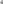
m مما عند 4.5 m، بما يتفق مع البيانات. يفسر نموذجنا نوعيًا
منحنيات الطور المرصودة، لكنه في توتر مع النماذج الحالية للحركيات
الحرارية-الكيميائية التي تتنبأ بتركيب جوي منتظم نطاقيًا نتيجة نقل
CO من المناطق الحارة في الغلاف الجوي.
m، بما يتفق مع البيانات. يفسر نموذجنا نوعيًا
منحنيات الطور المرصودة، لكنه في توتر مع النماذج الحالية للحركيات
الحرارية-الكيميائية التي تتنبأ بتركيب جوي منتظم نطاقيًا نتيجة نقل
CO من المناطق الحارة في الغلاف الجوي.
1 مقدمة
إذا كان للكوكب تباين كبير بما يكفي في درجة الحرارة بين النهار والليل، فسيبدي تغيرات طورية حرارية: إذ سيبدو أكثر سطوعًا في الأشعة تحت الحمراء عندما نرى جانبه النهاري منه عندما نرى جانبه الليلي. عمليًا، يتحقق هذا الشرط للكواكب القصيرة الدورة لأن قوى المد تميل إلى جعلها تدور تزامنيًا، بحيث يكون أحد نصفيها مواجهًا دائمًا للنجم المضيف، بينما يبقى النصف الآخر في ظلام دائم (مثلًا، Dobbs-Dixon et al., 2004). بغض النظر عن حالتها الدورانية الكامنة، تشير قياسات الطور الحرارية إلى أن الكواكب القصيرة الدورة تمتلك تباينات في درجة الحرارة بين النهار والليل تبلغ مئات إلى آلاف الكلفن (Cowan & Agol, 2011a; Perez-Becker & Showman, 2013; Schwartz & Cowan, 2015; Komacek & Showman, 2016; Schwartz et al., 2017).
ونتيجة لنقل الحرارة من النهار إلى الليل، قد تنزاح أسخن نقطة على الكوكب عن الموقع الدائم دون النجمي. يحدث كسر التناظر هذا لأن الكوكب المنغلق مديًا يظل يدور في إطار عطالي. وتزدوج قوى كوريوليس الناتجة مع فرق درجة الحرارة بين النهار والليل لتسريع نفاثة فائقة الدوران حول الكوكب (Showman & Polvani, 2011; Tsai et al., 2014). وتتنبأ نماذج الدوران الجوي للمشتريات الحارة المنغلقة مديًا على نحو شبه موحد بأن الغلاف الجوي تهيمن عليه نفاثة استوائية عريضة فائقة الدوران (Heng & Showman, 2014, مثلًا، والمراجع الواردة هناك). ويقود هذا إلى التنبؤ العام بأن تغيراتها الطورية الحرارية ستبلغ ذروتها قبل الاقتران العلوي، عندما تكون المناطق الواقعة شرق خط الطول دون النجمي مواجهة للراصد (ويُعرَّف الشرق بأنه اتجاه دوران الكوكب). وقد رُصدت هذه الإزاحة الطورية فعلًا في كثير من المشتريات الحارة، بدءًا من HD 189733b (Knutson et al., 2007, 2009, 2012).
نظرًا إلى النجاحات التي حققها رسم الخرائط الكسوفية والطورية باستخدام Spitzer، وKepler، وHubble، فمن المتوقع الآن أن يتيح تلسكوب James Webb الفضائي رسم خرائط 3D لجوانب النهار في المشتريات الحارة وخرائط 2D لخط الطول والضغط لجوانبها الليلية (للاطلاع على مراجعة لرسم خرائط الكواكب الخارجية، انظر Cowan & Fujii, 2017). تمتلك الأطوال الموجية المختلفة عتامات مختلفة، ومن ثم تسبر ضغوطًا مختلفة في الغلاف الجوي: فالعمق البصري حتى قمة الغلاف الجوي يتناسب مع كتلة الغاز الفوقي، وكذلك الضغط، ولذلك ينبغي أن يكون العمق البصري والضغط مرتبطين ارتباطًا وثيقًا، شريطة أن يكون طيف العتامة ثابتًا تقريبًا في الغلاف الجوي بأكمله.
في القسم 2 نناقش الاتجاهات الحالية في منحنيات الطور الخاصة بـ Spitzer للمشتريات الحارة، بما في ذلك اتجاهان يبدوان مخالفين للتوقعات. وفي القسم 3 نستخدم نموذجًا إشعاعيًا-هيدروديناميكيًا لاستكشاف اعتماد دوال المساهمة الرأسية على خط الطول في HD 189733b، ونجد أننا نستطيع تفسير الاتجاهات في منحنيات طور Spitzer تفسيرًا نوعيًا. ونناقش نتائجنا وآثارها في القسم 4
2 اتجاهات قياسات الطور للمشتريات الحارة باستخدام Spitzer
أُجريت قياسات طور حرارية بواسطة تلسكوب Spitzer الفضائي
(Werner et al., 2004) لعشرات الكواكب. وللاتساق، لا ننظر إلا في
قياسات الطور المستمرة لمدار كامل لكواكب في مدارات دائرية، والمكتسبة بكل من قناتي
3.6 و4.5  m
في كاميرا المصفوفة تحت الحمراء (IRAC؛ Fazio et al., 2004). ولذلك تتألف عينتنا
من سبعة كواكب: WASP-12b
(Cowan et al., 2012a)، HD 189733b (Knutson et al., 2012)، WASP-18b
(Maxted et al., 2013)، WASP-14b (Wong et al., 2015)، HAT-P-7b و
WASP-19b (Wong et al., 2016)، و WASP-43b (Stevenson et al., 2017).
m
في كاميرا المصفوفة تحت الحمراء (IRAC؛ Fazio et al., 2004). ولذلك تتألف عينتنا
من سبعة كواكب: WASP-12b
(Cowan et al., 2012a)، HD 189733b (Knutson et al., 2012)، WASP-18b
(Maxted et al., 2013)، WASP-14b (Wong et al., 2015)، HAT-P-7b و
WASP-19b (Wong et al., 2016)، و WASP-43b (Stevenson et al., 2017).
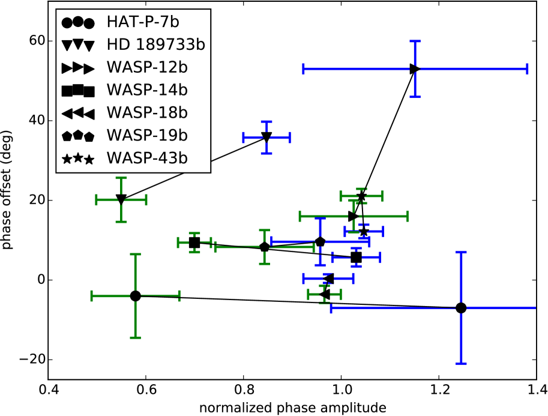
 . يدل الأزرق على 3.6
. يدل الأزرق على 3.6  m، بينما
يدل الأخضر على 4.5
m، بينما
يدل الأخضر على 4.5  m؛ ويرمز إلى كل كوكب برموز مختلفة
وتُوصَل الحزمتان الموجيتان لكل كوكب بخط
لتيسير القراءة البصرية. الاتجاه الأكثر متانة هو أن مطال
الطور المعياري يكون دائمًا أكبر عند 3.6
m؛ ويرمز إلى كل كوكب برموز مختلفة
وتُوصَل الحزمتان الموجيتان لكل كوكب بخط
لتيسير القراءة البصرية. الاتجاه الأكثر متانة هو أن مطال
الطور المعياري يكون دائمًا أكبر عند 3.6  m منه عند 4.5
m منه عند 4.5  m
(النقاط الزرقاء تقع دائمًا إلى يمين النقاط الخضراء). وبالإضافة
إلى ذلك، تبدي HD 189733b وWASP-12b وWASP-18b وWASP-19b
إزاحات طورية أكبر عند الطول الموجي ذي
المطال المعياري الأكبر. ولا يُتوقع أي من هذين الاتجاهين. فبصورة
ساذجة كنا نتوقع أن توجد النقاط الزرقاء في أعلى يسار
النقاط الخضراء.
m
(النقاط الزرقاء تقع دائمًا إلى يمين النقاط الخضراء). وبالإضافة
إلى ذلك، تبدي HD 189733b وWASP-12b وWASP-18b وWASP-19b
إزاحات طورية أكبر عند الطول الموجي ذي
المطال المعياري الأكبر. ولا يُتوقع أي من هذين الاتجاهين. فبصورة
ساذجة كنا نتوقع أن توجد النقاط الزرقاء في أعلى يسار
النقاط الخضراء.في الشكل 1 نرسم الإزاحة الطورية (الفصل الزاوي
بين قمة منحنى الطور والاقتران العلوي) مقابل مطال الطور المعياري
(مطال تغيرات الطور من القمة إلى القاع مقسومًا على عمق الكسوف عند ذلك
الطول الموجي). وفي التقريب الأول، تساوي الإزاحة الطورية
المسافة الطولية بين النقطة دون النجمية والبقعة الساخنة المنزاحة
نطاقيًا، لكنهما ليستا قابلتين للتبادل
(Cowan & Agol, 2008; Schwartz et al., 2017)، في حين يرتبط المطال المعياري
بتباين السطوع بين النهار والليل (انظر
نقاشًا إضافيًا في القسم 3). وتبين هذه البيانات اتجاهين:
(1) أن المطال المعياري لتغيرات الطور
دائمًا أكبر عند 3.6  m منه عند 4.5
m منه عند 4.5  m، و(2) أن
الإزاحة الطورية تكون غالبًا أكبر عند 3.6
m، و(2) أن
الإزاحة الطورية تكون غالبًا أكبر عند 3.6  m منها عند
4.5
m منها عند
4.5  m. لاحظ أن الاتجاه الثاني ليس ذا دلالة إحصائية تقارب
دلالة الاتجاه الأول.
m. لاحظ أن الاتجاه الثاني ليس ذا دلالة إحصائية تقارب
دلالة الاتجاه الأول.
تتنبأ نماذج الاتزان الحراري-الكيميائي الصافية السماء أحادية البعد
لـ HD 189733b بأن فوتونات 3.6  m تنشأ من أعماق أكبر في
الغلاف الجوي مما تنشأ منه فوتونات 4.5
m تنشأ من أعماق أكبر في
الغلاف الجوي مما تنشأ منه فوتونات 4.5  m على كل من جانب النهار
وجانب الليل (الشكل 8 في Knutson et al., 2009). وبما أن
المقاييس الزمنية الإشعاعية تزداد مع العمق، فإننا نتوقع
تغيرات طورية أصغر مطالًا عند 3.6
m على كل من جانب النهار
وجانب الليل (الشكل 8 في Knutson et al., 2009). وبما أن
المقاييس الزمنية الإشعاعية تزداد مع العمق، فإننا نتوقع
تغيرات طورية أصغر مطالًا عند 3.6  m منها عند 4.5
m منها عند 4.5  m—على افتراض
مقاييس زمنية حملية مماثلة (سرعات رياح) عند جميع الضغوط. وهذا
التنبؤ الساذج تستبعده بوضوح البيانات المعروضة في
الشكل 1.
m—على افتراض
مقاييس زمنية حملية مماثلة (سرعات رياح) عند جميع الضغوط. وهذا
التنبؤ الساذج تستبعده بوضوح البيانات المعروضة في
الشكل 1.
وفوق ذلك، يوحي حدس المذبذبات المدفوعة المخمدة (ونماذج موازنة الطاقة: Cowan & Agol, 2011b; Zhang & Showman, 2017) بأن الإزاحة الطورية والمطال المعياري ينبغي أن يكونا مترابطين عكسيًا، بحيث تلزم لتغيرات الطور الكبيرة المطال إزاحة طورية صغيرة (مثلًا، الملحق A في Schwartz et al., 2017). ولا يُرى هذا الاتجاه أيضًا: فأربعة من الكواكب السبعة (HD 189733b، وWASP-12b، وWASP-18b، وWASP-19b) تبدي بدلًا من ذلك إزاحات طورية أكبر عند الطول الموجي ذي المطال المعياري الأكبر. وعلى الرغم من اختلاف درجات حرارة الاتزان والجاذبيات السطحية لهذه الكواكب، فإن المحاكيات (انظر Heng & Showman, 2014) لمجموعة واسعة من الكواكب تبدي بنية ديناميكية شبيهة بـ HD 189733b، ولذلك نتوقع سلوكًا مشابهًا.
3 تنبؤات من نموذج إشعاعي-هيدروديناميكي لـ HD 189733b
لاستكشاف هذه الظواهر، نستخدم شيفرة هيدروديناميكية إشعاعية
تحل معادلات Navier-Stokes القابلة للانضغاط كليًا والمقترنة
بانتقال إشعاعي يعتمد على الطول الموجي لمحاكاة الغلاف الجوي
للكوكب HD 189733b (Dobbs-Dixon & Agol, 2013). تُحل المعادلات
في إحداثيات كروية بدقة  ، حيث
، حيث
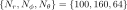
هو المسافة الشعاعية، و هو خط الطول، و
هو خط الطول، و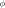
هو خط العرض. ويستخدم انتقال الطاقة بالإشعاع تقريبًا ثنائي التيار معتمدًا على التردد (Mihalas, 1978). ويُقسَّم الطيف الكوكبي الكامل إلى 30 حزمة باستخدام عتامات معتمدة على التردد ومأخوذة بالمتوسط من Sharp & Burrows (2007). وتمثل نفاثة استوائية عريضة فائقة الدوران ونفاثات متوسطة العرض عكسية الدوران السمات الديناميكية السائدة، على غرار كثير من النماذج الأخرى في الأدبيات. وتُحسب الكميات القابلة للرصد بتتبع الأشعة عبر الغلاف الجوي المحاكى عند 5000 طولًا موجيًا بين 0.3 و 30 m. ونوعيًا، يتبين أن النموذج يطابق أرصاد العبور والكسوف
ومنحنى الطور، وإن ظلت فروق كمية قائمة (انظر أدناه). كذلك، ومع
أننا لا نعرض إلا محاكيات لـ HD 189733b، فإن السمات الديناميكية
الكامنة المعروضة في هذا الغلاف الجوي، كما نوقش أعلاه، يُتوقع أن
تنطبق على طيف واسع من الكواكب. ويمكن العثور على مزيد من التفاصيل
عن كل من المحاكاة الإشعاعية-الهيدروديناميكية وطريقة حساب الكميات
القابلة للرصد في Dobbs-Dixon & Agol (2013).
m. ونوعيًا، يتبين أن النموذج يطابق أرصاد العبور والكسوف
ومنحنى الطور، وإن ظلت فروق كمية قائمة (انظر أدناه). كذلك، ومع
أننا لا نعرض إلا محاكيات لـ HD 189733b، فإن السمات الديناميكية
الكامنة المعروضة في هذا الغلاف الجوي، كما نوقش أعلاه، يُتوقع أن
تنطبق على طيف واسع من الكواكب. ويمكن العثور على مزيد من التفاصيل
عن كل من المحاكاة الإشعاعية-الهيدروديناميكية وطريقة حساب الكميات
القابلة للرصد في Dobbs-Dixon & Agol (2013).
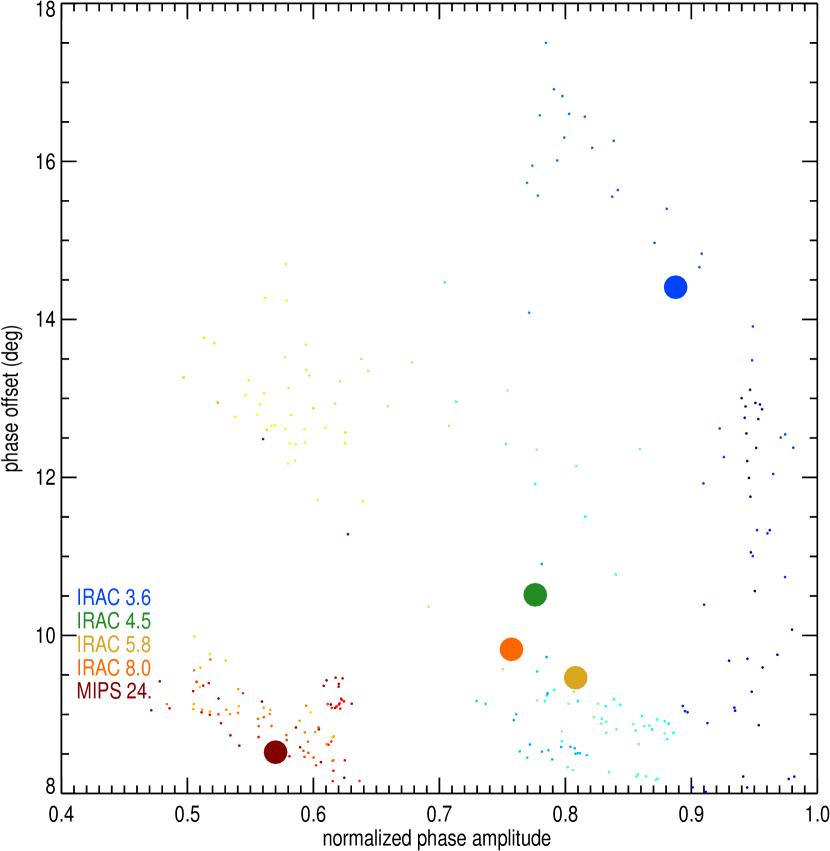
 . وتوضح النقاط الصغيرة القيم عند مجموعة فرعية من
الأطوال الموجية المنفردة (ملونة من الأحمر إلى الأزرق مع تناقص
الطول الموجي)، بينما تمثل النقاط الأكبر كميات IRAC وMIPS
المتوسطة على الحزمة. وتُستخرج كلتا الكميتين من
منحنيات طور نظرية معتمدة على الطول الموجي ومولدة بتتبع الأشعة
عبر النموذج الإشعاعي-الهيدروديناميكي. وبما أن منحنيات الطور
ليست جيبية، فإننا نستخدم الفيوض المحاكاة عند
أطوار قريبة من العظمى والصغرى للملاءمة من أجل
. وتوضح النقاط الصغيرة القيم عند مجموعة فرعية من
الأطوال الموجية المنفردة (ملونة من الأحمر إلى الأزرق مع تناقص
الطول الموجي)، بينما تمثل النقاط الأكبر كميات IRAC وMIPS
المتوسطة على الحزمة. وتُستخرج كلتا الكميتين من
منحنيات طور نظرية معتمدة على الطول الموجي ومولدة بتتبع الأشعة
عبر النموذج الإشعاعي-الهيدروديناميكي. وبما أن منحنيات الطور
ليست جيبية، فإننا نستخدم الفيوض المحاكاة عند
أطوار قريبة من العظمى والصغرى للملاءمة من أجل 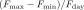
، أي الإزاحة، ومن أجل . وتمثل الفيض الكوكبي أثناء الكسوف. واتساقًا مع الأرصاد المعروضة في الشكل 1، تكون كل من الإزاحة والمطال المعياري عند 3.6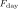
m أكبر مما عند 4.5 m. أما الإزاحات عند 5.8
m. أما الإزاحات عند 5.8  m،
و8.0
m،
و8.0  m، و24.0
m، و24.0  m فهي أصغر ومتشابهة إلى حد كبير لأنها
تسبر المناطق العليا من الغلاف الجوي (انظر النص). ويأتي
اختلاف مطال الطور لهذه الحزم من البنية المتداخلة
لدوال مساهمتها مع خط الطول، كما هو مبين في
الشكل 4.
m فهي أصغر ومتشابهة إلى حد كبير لأنها
تسبر المناطق العليا من الغلاف الجوي (انظر النص). ويأتي
اختلاف مطال الطور لهذه الحزم من البنية المتداخلة
لدوال مساهمتها مع خط الطول، كما هو مبين في
الشكل 4.لمقارنة محاكاتنا بالشكل 1 نحسب كلاً من
الإزاحة الطورية ومطال الطور المعياري. ويتم ذلك أولًا بحساب
منحنى طور نظري من النموذج؛ وهو في الجوهر تجميع لأطياف الانبعاث
مع تحرك خط الطول دون الراصد حول الكوكب كما يحدث على مدار
مداري. وبعد الحصول على منحنى طور معتمد على الطول الموجي، نجزئه
باستخدام ممرات حزم IRAC وMIPS لتجميع منحنيات الطور لأي
ممر حزمة. ومن منحنيات الطور المتوسطة على الحزمة هذه، يصبح من
البديهي ملاءمة الفيض الأعظم والفيض الأدنى وإزاحة الفيض
الأعظم. وتُرسم النتائج في الشكل 2. وتمثل النقاط
الصغيرة الملونة مجموعة فرعية من الأطوال الموجية المنفردة، في حين
ترمز النقاط الملونة الكبيرة إلى الكميات المتكاملة على الحزمة. ويمتلك
منحنى الطور المتوقع عند 3.6  m مطالًا وإزاحة طورية أكبر
من منحنى الطور عند 4.5
m مطالًا وإزاحة طورية أكبر
من منحنى الطور عند 4.5  m، كما رُصد في HD 189733b و
كثير من المشتريات الحارة الأخرى (قارن بالشكلين 1 و
2). غير أننا، على الرغم من مطابقة المواقع النسبية لحزمتي
3.6 و4.5
m، كما رُصد في HD 189733b و
كثير من المشتريات الحارة الأخرى (قارن بالشكلين 1 و
2). غير أننا، على الرغم من مطابقة المواقع النسبية لحزمتي
3.6 و4.5  m، لا نطابقها كميًا. وقد أُدرك ذلك في
Dobbs-Dixon & Agol (2013)، الذي أشار إلى أن الإزاحات الطورية
في النموذج كانت مقدرة بأقل من قيمتها على نحو موحد، مما يوحي
بالحاجة إما إلى نفاثة أقوى أو إلى مقياس زمني إشعاعي أطول. وفي
الواقع، لا توجد نماذج 3D حالية تتنبأ كميًا بالإزاحة الطورية،
إذ إن معظم النماذج الأخرى تبالغ في التنبؤ بها
(مثلًا Showman et al., 2009).
m، لا نطابقها كميًا. وقد أُدرك ذلك في
Dobbs-Dixon & Agol (2013)، الذي أشار إلى أن الإزاحات الطورية
في النموذج كانت مقدرة بأقل من قيمتها على نحو موحد، مما يوحي
بالحاجة إما إلى نفاثة أقوى أو إلى مقياس زمني إشعاعي أطول. وفي
الواقع، لا توجد نماذج 3D حالية تتنبأ كميًا بالإزاحة الطورية،
إذ إن معظم النماذج الأخرى تبالغ في التنبؤ بها
(مثلًا Showman et al., 2009).
ومع أننا عرضنا مطالات الطور بدلالة الفيض، ينبغي توخي
شيء من الحذر. فلو كان جانبا النهار والليل من الكوكب
متساويي الحرارة، بدرجتي حرارة أعلى وأدنى على التوالي، فإن
طبيعة انبعاث الجسم الأسود ستنتج طبيعيًا مطال طور أكبر عند
3.6  m منه عند 4.5
m منه عند 4.5  m. ويتمثل حل محتمل
في استكشاف درجة حرارة السطوع بوصفها دالة في الطور
بدلًا من ذلك. في الشكل 3 نعرض
m. ويتمثل حل محتمل
في استكشاف درجة حرارة السطوع بوصفها دالة في الطور
بدلًا من ذلك. في الشكل 3 نعرض  بوصفها
دالة في الطول الموجي لعدة أطوار تمثيلية. وتؤدي الطبيعة الشديدة
عدم تساوي الحرارة للغلاف الجوي في الاتجاه الشعاعي
إلى اعتماد كبير على الطول الموجي، إضافة إلى الاعتماد الطولي
المتوقع. ولهذا السبب، ومع اقترانه بحقيقة أن درجة حرارة السطوع
كمية أكثر اشتقاقًا تؤدي إلى لايقين أكبر، نختار عرض الفيوض. ومع
ذلك، وكما يمكن قراءته من نقاط IRAC المتوسطة على الحزمة في الشكل،
فإن الفرق في درجة حرارة السطوع بين النهار والليل أكبر أيضًا عند
3.6
بوصفها
دالة في الطول الموجي لعدة أطوار تمثيلية. وتؤدي الطبيعة الشديدة
عدم تساوي الحرارة للغلاف الجوي في الاتجاه الشعاعي
إلى اعتماد كبير على الطول الموجي، إضافة إلى الاعتماد الطولي
المتوقع. ولهذا السبب، ومع اقترانه بحقيقة أن درجة حرارة السطوع
كمية أكثر اشتقاقًا تؤدي إلى لايقين أكبر، نختار عرض الفيوض. ومع
ذلك، وكما يمكن قراءته من نقاط IRAC المتوسطة على الحزمة في الشكل،
فإن الفرق في درجة حرارة السطوع بين النهار والليل أكبر أيضًا عند
3.6
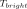
m منه عند 4.5 m. ويظهر هذا الاتجاه بالمثل في
أرصاد HD 189733b.
m. ويظهر هذا الاتجاه بالمثل في
أرصاد HD 189733b.
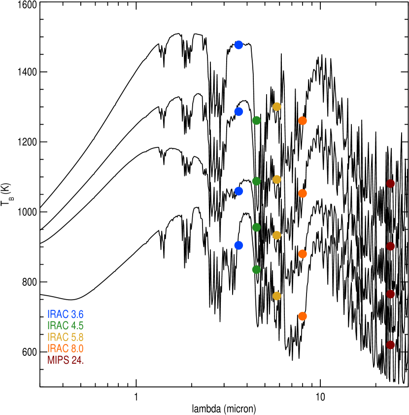
في محاولة لإيضاح الآلية الكامنة وراء النتائج غير الحدسية في الأشكال 1 و2 و 3، نحسب دالة المساهمة الرأسية المعتمدة على خط الطول عند خط الاستواء من نموذجنا. وتُعطى دالة المساهمة بـ (Chamberlain & Hunten, 1987):
 |
 |
حيث إن  هو العمق البصري المعتمد على الطول الموجي و
هو العمق البصري المعتمد على الطول الموجي و هو
الجسم الأسود المحلي. وتُعرض النتائج في الشكل 4. ففي
الجانب الأيسر، يبين المقياس الرمادي درجة الحرارة بوصفها دالة في
الضغط وخط الطول على امتداد خط الاستواء، مع وقوع النقطة دون النجمية
عند خط طول مقداره صفر درجة. وتشير الأشرطة الملونة إلى مناطق
الغلاف الجوي القريبة من قمة دوال المساهمة. وتظهر على الفور
البنية المعقدة للضغط وخط الطول في دوال المساهمة. فعلى
سبيل المثال، يقع فوتوسفير 3.6
هو
الجسم الأسود المحلي. وتُعرض النتائج في الشكل 4. ففي
الجانب الأيسر، يبين المقياس الرمادي درجة الحرارة بوصفها دالة في
الضغط وخط الطول على امتداد خط الاستواء، مع وقوع النقطة دون النجمية
عند خط طول مقداره صفر درجة. وتشير الأشرطة الملونة إلى مناطق
الغلاف الجوي القريبة من قمة دوال المساهمة. وتظهر على الفور
البنية المعقدة للضغط وخط الطول في دوال المساهمة. فعلى
سبيل المثال، يقع فوتوسفير 3.6  m عند فوتوسفير
4.5
m عند فوتوسفير
4.5  m أو فوقه على جانب النهار من الكوكب. أما على جانب الليل، من
ناحية أخرى، فإن المقولة المعتادة «القناة ch1 تسبر أعمق» تتحقق
فعليًا.
m أو فوقه على جانب النهار من الكوكب. أما على جانب الليل، من
ناحية أخرى، فإن المقولة المعتادة «القناة ch1 تسبر أعمق» تتحقق
فعليًا.
تنشأ دوال المساهمة المتداخلة بسبب اعتماد العتامة على درجة الحرارة والضغط والطول الموجي، إذ يمكن أن تزداد في حزمة ما بينما تنخفض في حزمة أخرى في الوقت نفسه. والنتيجة هي أن الفوتوسفيرات الفعالة في الحزم المختلفة قد تتقاطع، مما يعني أننا نسبر أعماقًا وضغوطًا نسبية مختلفة في الغلاف الجوي عند أطوار مدارية مختلفة. وتعرض اللوحة اليمنى من الشكل 4 دوال المساهمة الرأسية عند النقطتين دون النجمية والمضادة للنجم. ومن هذه الرسوم يتضح أن دوال المساهمة بعيدة عن كونها دوال دلتا، بل إنها في الواقع تسبر مجالات واسعة من الضغوط ويمكن أن تبدي عدة عظمى.
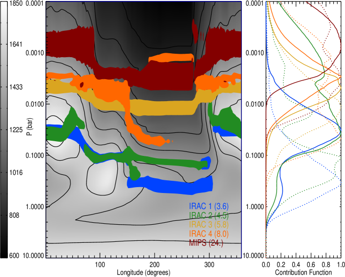
توجد عدة سمات في الشكل 4 تظهر
ذاتها في الشكل 2. بدءًا من حزم 5.8 و8.0 و
24  m، نرى أنها تسبر مناطق منخفضة الضغط على
جانب النهار. وبالنظر إلى المقاييس الزمنية الإشعاعية القصيرة عند هذه الضغوط
المنخفضة، يكون انزياح البقعة الساخنة صغيرًا جدًا، مما ينتج
إزاحات طورية صغيرة. وتعود الإزاحة الطورية المنخفضة نسبيًا لنقطة
4.5
m، نرى أنها تسبر مناطق منخفضة الضغط على
جانب النهار. وبالنظر إلى المقاييس الزمنية الإشعاعية القصيرة عند هذه الضغوط
المنخفضة، يكون انزياح البقعة الساخنة صغيرًا جدًا، مما ينتج
إزاحات طورية صغيرة. وتعود الإزاحة الطورية المنخفضة نسبيًا لنقطة
4.5  m إلى سمتين: الطبيعة المنحنية للفوتوسفير و
القمم المتعددة لدالة المساهمة مع الارتفاع كما هو مبين في
اللوحة اليمنى. ويعني تقوس الفوتوسفير أنه يسبر
درجات حرارة أبرد كلما ابتعد عن النقطة دون النجمية،
مما يجعل خريطة السطوع النهارية للكوكب أكثر تركزًا مركزيًا
(شبيهًا أساسًا بتعتيم الحافة). أما الأثر الثاني، وهو
دالة المساهمة مزدوجة القمة، فيعني أن
جزءًا كبيرًا من الانبعاث يأتي من مواضع أعلى في
الغلاف الجوي، حيث يميل المقياس الزمني الإشعاعي القصير مرة أخرى إلى
تقليل الإزاحة الطورية. أما فوتوسفير 3.6
m إلى سمتين: الطبيعة المنحنية للفوتوسفير و
القمم المتعددة لدالة المساهمة مع الارتفاع كما هو مبين في
اللوحة اليمنى. ويعني تقوس الفوتوسفير أنه يسبر
درجات حرارة أبرد كلما ابتعد عن النقطة دون النجمية،
مما يجعل خريطة السطوع النهارية للكوكب أكثر تركزًا مركزيًا
(شبيهًا أساسًا بتعتيم الحافة). أما الأثر الثاني، وهو
دالة المساهمة مزدوجة القمة، فيعني أن
جزءًا كبيرًا من الانبعاث يأتي من مواضع أعلى في
الغلاف الجوي، حيث يميل المقياس الزمني الإشعاعي القصير مرة أخرى إلى
تقليل الإزاحة الطورية. أما فوتوسفير 3.6  m، من جهة أخرى، فهو
تقريبًا سطح تساوي ضغط على جانب النهار، ومن ثم تأتي الإزاحة الطورية الأكبر عند 3.6
m، من جهة أخرى، فهو
تقريبًا سطح تساوي ضغط على جانب النهار، ومن ثم تأتي الإزاحة الطورية الأكبر عند 3.6  m.
m.
ويمكن كذلك قراءة مطالات الطور أساسًا من
الشكل 4. فتبقى قمة دالة المساهمة لحزمة
24  m عالية في الغلاف الجوي، حيث يكون باردًا عبر
الكوكب كله، مما ينتج أصغر مطال طور. وتكون
مطالات الطور عند 5.8 و8.0
m عالية في الغلاف الجوي، حيث يكون باردًا عبر
الكوكب كله، مما ينتج أصغر مطال طور. وتكون
مطالات الطور عند 5.8 و8.0  m متشابهة، مع أن
5.8
m متشابهة، مع أن
5.8  m يعبر عددًا أكبر من خطوط تساوي الحرارة، مما ينتج قيمة
أكبر قليلًا. وللوهلة الأولى، يبدو أن مطالات الطور النسبية عند 4.5
و3.6
m يعبر عددًا أكبر من خطوط تساوي الحرارة، مما ينتج قيمة
أكبر قليلًا. وللوهلة الأولى، يبدو أن مطالات الطور النسبية عند 4.5
و3.6  m تخالف غيرها. غير أنه، كما يُرى مرة أخرى
في اللوحة اليمنى، فإن المساهمة الكبيرة عند 4.5
m تخالف غيرها. غير أنه، كما يُرى مرة أخرى
في اللوحة اليمنى، فإن المساهمة الكبيرة عند 4.5  m
من المناطق العليا الأبرد في الغلاف الجوي تنتج قيمة أدنى
لـ
m
من المناطق العليا الأبرد في الغلاف الجوي تنتج قيمة أدنى
لـ
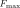
مقارنة بـ 3.6 m وتؤدي إلى مطال طور
أصغر.
m وتؤدي إلى مطال طور
أصغر.
وتعود الفوتوسفيرات المتداخلة إلى تغيرات العتامة مع درجة الحرارة والضغط. وتستخدم النماذج الإشعاعية-الهيدروديناميكية عتامات من Sharp & Burrows (2007)، تفترض وفرة شمسية واتزانًا حراريًا-كيميائيًا عند كل درجة حرارة وضغط (أي: موقع) في الغلاف الجوي. وتشمل العتامات الامتصاص الناتج عن الأنواع الأربعة الأكثر نشاطًا طيفيًا، وهي H2O وCO وCO2 وCH4. ويُعد افتراض الاتزان الحراري-الكيميائي مهمًا، ونناقشه أدناه.
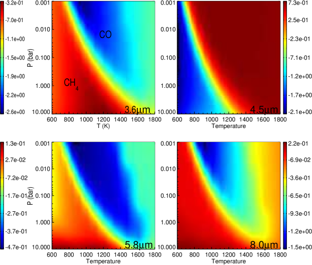
 m،
و4.5
m،
و4.5 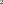
m، و5.8 m، و8.0 m. أُخذت العتامات
من Sharp & Burrows (2007) وتفترض الاتزان الحراري-الكيميائي
عند كل درجة حرارة وضغط. والسمة الواضحة
الممتدة قطريًا عبر جميع الرسوم هي تغير العتامة
مع انتقال الجزيء الحامل للكربون المهيمن من CH4 في
أسفل اليسار إلى CO في أعلى اليمين. وعند ضغط معين،
تؤدي زيادة العتامة عند 4.5
m، و8.0 m. أُخذت العتامات
من Sharp & Burrows (2007) وتفترض الاتزان الحراري-الكيميائي
عند كل درجة حرارة وضغط. والسمة الواضحة
الممتدة قطريًا عبر جميع الرسوم هي تغير العتامة
مع انتقال الجزيء الحامل للكربون المهيمن من CH4 في
أسفل اليسار إلى CO في أعلى اليمين. وعند ضغط معين،
تؤدي زيادة العتامة عند 4.5  m مع درجة الحرارة (بخلاف
الانخفاض عند الأطوال الموجية الثلاثة الأخرى) دورًا مهمًا
في تحديد الموقع الشعاعي النسبي للفوتوسفيرات
مع خط الطول. لاحظ أن هذه ليست كميات متوسطة على الحزمة، بل
تركز بدلًا من ذلك على الطول الموجي المركزي للحزمة.
m مع درجة الحرارة (بخلاف
الانخفاض عند الأطوال الموجية الثلاثة الأخرى) دورًا مهمًا
في تحديد الموقع الشعاعي النسبي للفوتوسفيرات
مع خط الطول. لاحظ أن هذه ليست كميات متوسطة على الحزمة، بل
تركز بدلًا من ذلك على الطول الموجي المركزي للحزمة.لفهم سلوك العتامة في المحاكيات الحالية، نرسم
بنية العتامة مع درجة الحرارة والضغط عند أربعة
أطوال موجية تمثيلية في الشكل 5. لاحظ أن
هذه عتامات عند أطوال موجية منفردة في مركز حزم IRAC،
وليست كميات متوسطة على الحزمة. والسمة الأوضح في
الرسوم هي الانتقال الممتد قطريًا في جميع الرسوم 4،
وهو يقابل انتقال CO–CH4. وتقع ضغوط و
درجات حرارة HD 189733b بحيث تتقاطع مع هذا الحد. ومن خلال
اتباع سطح تساوي ضغط عبر كل من الرسوم يمكن تكوين تصور تقريبي
للعتامة بوصفها دالة في خط الطول قرب أعظم دالة
المساهمة. ومن الجدير بالملاحظة خصوصًا أن العتامة عند 3.6  m
تزداد بمراتب مقدارية عند الانتقال من النهار إلى الليل، بينما
تنخفض عند 4.5
m
تزداد بمراتب مقدارية عند الانتقال من النهار إلى الليل، بينما
تنخفض عند 4.5  m. وحقيقة أنها غير مترابطة
تقود مباشرة إلى تقاطع دوال المساهمة مع
خط الطول؛ فلا يمكن افتراض أن طولًا موجيًا معينًا يسبر دائمًا
عمقًا أكبر أو أصغر من طول آخر. ومع أن كيمياء الكربون تؤدي على الأرجح
دورًا مهمًا في تفسير الاتجاه في HD 189733b،
فإن الكواكب ذات الأغلفة الجوية الأسخن أو الأبرد قد لا تتقاطع مع
هذا الانتقال. ومع ذلك، وكما يبين الشكل 1، تبدي كواكب
ذات نطاق واسع من المعلمات هذه النتيجة المنافية للحدس.
وكما نناقش أدناه، قد تؤدي فيزياء إضافية، بما في ذلك
الخلط الرأسي والسحب غير المتجانسة، إلى ظواهر مشابهة.
m. وحقيقة أنها غير مترابطة
تقود مباشرة إلى تقاطع دوال المساهمة مع
خط الطول؛ فلا يمكن افتراض أن طولًا موجيًا معينًا يسبر دائمًا
عمقًا أكبر أو أصغر من طول آخر. ومع أن كيمياء الكربون تؤدي على الأرجح
دورًا مهمًا في تفسير الاتجاه في HD 189733b،
فإن الكواكب ذات الأغلفة الجوية الأسخن أو الأبرد قد لا تتقاطع مع
هذا الانتقال. ومع ذلك، وكما يبين الشكل 1، تبدي كواكب
ذات نطاق واسع من المعلمات هذه النتيجة المنافية للحدس.
وكما نناقش أدناه، قد تؤدي فيزياء إضافية، بما في ذلك
الخلط الرأسي والسحب غير المتجانسة، إلى ظواهر مشابهة.
4 المناقشة والاستنتاجات
4.1 السحب والكيمياء غير المتزنة
استخدمنا نموذجًا خاليًا من السحب ذا وفرة شمسية يكون فيه الغلاف الجوي في كل مكان في اتزان حراري-كيميائي. ويمكن للسحب من حيث المبدأ أن تغير هذه القصة بطريقتين. أولًا، يمكن للتكاثف أن يقلل وفرة الطور الغازي بمراتب مقدارية. لكن الممتصات السائدة في قنوات Spitzer IRAC، وهي H2O وCO وCO2 و CH4، لا تتكاثف في أي موضع من غلاف مشتري حار الجوي. والأهم من ذلك أن المتكاثفات المعدنية تزيد العتامة، وتفعل ذلك بطريقة رمادية نسبيًا. ولذلك ستؤدي السحب المنتظمة إلى دوال مساهمة أقل اعتمادًا على الطول الموجي. أما السحب غير المتجانسة، كما استُنتج استنادًا إلى منحنيات الطور البصرية (Demory et al., 2013; Esteves et al., 2015; Angerhausen et al., 2015) والمحاكيات (Lee et al., 2016)، فستعقد الصورة، إذ تمتلك المناطق الغائمة دوال مساهمة متداخلة بينما تبدي المناطق الصافية الآثار المعتمدة على درجة الحرارة التي ناقشناها في هذه الورقة.
اقترح Knutson et al. (2012) أن جانب الليل في HD 189733b قد
لا يكون في اتزان حراري-كيميائي. فدرجة حرارة السطوع الليلية
المرصودة أكبر عند 4.5 منها عند 3.6  m، وهو ما
يمكن تفسيره إذا كان CO من الطبقات الأعمق، أو من جانب النهار،
يُنقل إلى جوار الفوتوسفير تحت الأحمر أسرع من
المقياس الزمني الكيميائي (Madhusudhan et al., 2016). وبالفعل، تنبأ Cooper & Showman (2006)
بأن الديناميكيات الجوية يمكن أن تخلط أغلفة المشتريات الحارة
أسرع مما تستطيع الكيمياء أن تعمل. وتنبأ Agúndez et al. (2014) بأن
HD 189733b ينبغي أن يحتوي على CO بدلًا من CH4 في كل مكان من
الغلاف الجوي بسبب الإخماد الأفقي.
m، وهو ما
يمكن تفسيره إذا كان CO من الطبقات الأعمق، أو من جانب النهار،
يُنقل إلى جوار الفوتوسفير تحت الأحمر أسرع من
المقياس الزمني الكيميائي (Madhusudhan et al., 2016). وبالفعل، تنبأ Cooper & Showman (2006)
بأن الديناميكيات الجوية يمكن أن تخلط أغلفة المشتريات الحارة
أسرع مما تستطيع الكيمياء أن تعمل. وتنبأ Agúndez et al. (2014) بأن
HD 189733b ينبغي أن يحتوي على CO بدلًا من CH4 في كل مكان من
الغلاف الجوي بسبب الإخماد الأفقي.
أبلغ Stevenson et al. (2010) عن كيمياء غير متزنة على
GJ 436b استنادًا إلى طيف انبعاث جانب النهار: فقد رأوا دليلًا على
CO بدلًا من CH4. وبما أن حتى درجة حرارة الفوتوسفير دون النجمية
أبرد من أن تفضل CO، فلا بد أن الغاز آتٍ من طبقات أعمق
من الغلاف الجوي، وهو ما يسمى الإخماد الرأسي. ويمكن للخلط
الرأسي في HD 189733b أيضًا أن يزيد وفرة CO عند
فوتوسفير جانب الليل، لأن CO يكون مفضلًا في كل مكان عند ضغوط
 1 bar. ومن المثير للاهتمام أنه عند ضغوط أعلى من
1 bar. ومن المثير للاهتمام أنه عند ضغوط أعلى من  10 bar،
يعود CH4 ليصبح النوع السائد (مثلًا، الشكل 2
في Madhusudhan et al., 2016)، ولذلك فإن أثر الخلط الرأسي يعمل في الاتجاهين.
10 bar،
يعود CH4 ليصبح النوع السائد (مثلًا، الشكل 2
في Madhusudhan et al., 2016)، ولذلك فإن أثر الخلط الرأسي يعمل في الاتجاهين.
إذا كانت أغلفة المشتريات الحارة مختلطة جيدًا، فإن
الآثار المعتمدة على درجة الحرارة التي نناقشها في هذه الرسالة البحثية تصبح
أقل درامية، لكنها تظل مهمة. وعلى وجه الخصوص، فإن الشكل الغريب
لفوتوسفير 4.5  m —الذي يفسر جزئيًا الإزاحات الطورية الصغيرة
عند هذا الطول الموجي— لا تدفعه كيمياء الكربون.
m —الذي يفسر جزئيًا الإزاحات الطورية الصغيرة
عند هذا الطول الموجي— لا تدفعه كيمياء الكربون.
على أي حال، يُعد HD 189733b أبرد مشتري حار وأكثرها اتساقًا حراريًا طوليًا مما دُرس حتى الآن (Schwartz & Cowan, 2015; Schwartz et al., 2017). وتمتلك معظم المشتريات الحارة ذات منحنيات الطور المنشورة تباينات طولية في درجة الحرارة أكبر بكثير، غالبًا ما تقاس بالآلاف لا بالمئات من الكلفن. كما أن أشدها حرارة يمتلك درجات حرارة نهارية عالية بما يكفي لتفكيك الجزيئات وتأيين الذرات، مثل WASP-12b (Hebb et al., 2009)، وWASP-33b (Smith et al., 2011)، وKELT-9b (Gaudi et al., 2017). وينبغي أن تؤدي هذه الانتقالات إلى فروق عتامة هائلة بين الليل والنهار، ومن ثم إلى انحرافات كبيرة في دوال المساهمة الخاصة بالأطوال الموجية. وليس واضحًا إلى أي مدى يمكن للخلط الأفقي والرأسي أن يجانس أغلفة مثل هذه العوالم.
4.2 آثار الفوتوسفيرات غير متساوية الضغط
ليست الفوتوسفيرات المعتمدة على الطول الموجي الكرات متحدة المركز التي نحب أن نتخيلها. ولا يؤثر ذلك بالضرورة في تقديرات درجات الحرارة الفعالة: فكثير من مخططات الانتقال من درجات حرارة السطوع إلى درجة حرارة فعالة لا تعتمد على الضغوط الدقيقة التي تسبرها الأطوال الموجية المختلفة (Cowan & Agol, 2011a; Schwartz & Cowan, 2015)، وإن كانت ميزانيات الطاقة المستندة إلى الاسترجاع الطيفي قد تكون أكثر حساسية (مثلًا، Stevenson et al., 2014). كما أن الفوتوسفيرات غير متساوية الضغط لا تبطل رسم الخرائط الكسوفية والطورية، سواء في حزمة عريضة واحدة، أو في حزم متعددة، أو حتى في رسم الخرائط الطيفية (يمكن لتعتيم الحافة من حيث المبدأ أن يعرقل جهود رسم الخرائط الحرارية، لكن سبق أن بُين أنه مهمل: Cowan & Agol, 2008).
غير أن الفوتوسفيرات المتداخلة تعقد تفسير الخرائط متعددة الأطوال الموجية. وعلى وجه الخصوص، بينا أن افتراض أن الأطوال الموجية المختلفة تسبر تلقائيًا طبقات مختلفة غير صحيح: فهو صحيح تقريبًا عند أي خط طول وخط عرض على كوكب ما، لكن مواقع الطبقات وترتيبها تتغير من موضع إلى آخر، وتدفعها أساسًا الفروق في درجة الحرارة مقترنة بطيف عتامة يعتمد على درجة الحرارة.
ولبناء خرائط متعددة الأبعاد للمشتريات الحارة، سيتعين علينا القيام بشيء أذكى من بناء طبقات متراكبة من خرائط متعددة أحادية الطول الموجي. ويمكن بدلًا من ذلك البدء بتقييم الملف الرأسي لدرجة الحرارة عند كل موضع على الخرائط —ولا سيما المناطق القريبة من خط الاستواء التي تسهم أكثر في منحنيات الضوء ومن ثم تكون أفضل تقييدًا (وهذه الخطوة ليست مماثلة لإجراء استرجاع طيفي على أطياف مدمجة على القرص كما فُعل في Stevenson et al., 2014). ثم يمكن جمع هذه السبرات الرأسية لدرجة الحرارة لبناء خريطة 3D حقيقية لبنية درجة حرارة الكوكب (مع التحفظ المعتاد بأن القيود العرضية على جانب الليل ضعيفة و غير مباشرة: Majeau et al., 2012; de Wit et al., 2012; Cowan et al., 2013). ويتمثل التحدي في هذا النهج في تقييم اللايقين في خرائط السطوع عند كل موضع بطريقة مفيدة لتمارين الاسترجاع الطيفي.
وبدلًا من ذلك، قد يكون من الممكن ملاءمة البيانات متعددة الأطوال الموجية المدمجة على القرص في آن واحد بنموذج يأخذ في الحسبان لا تغيرات درجة الحرارة 3D فحسب، بل أيضًا الفوتوسفيرات المتجولة. وفي كل الأحوال، هذه مشكلة جديرة بالمعالجة قريبًا نظرًا إلى الإطلاق الوشيك لتلسكوب James Webb الفضائي.
References
- Agúndez et al. (2014) Agúndez, M., Parmentier, V., Venot, O., Hersant, F., & Selsis, F. 2014, A&A, 564, A73
- Angerhausen et al. (2015) Angerhausen, D., DeLarme, E., & Morse, J. A. 2015, Publications of the Astronomical Society of the Pacific, 127, 1113
- Chamberlain & Hunten (1987) Chamberlain, J. W., & Hunten, D. M. 1987, Theory of planetary atmospheres. An introduction to their physics and chemistry (Academic Press)
- Cooper & Showman (2006) Cooper, C. S., & Showman, A. P. 2006, ApJ, 649, 1048
- Cowan & Agol (2008) Cowan, N. B., & Agol, E. 2008, ApJ, 678, L129
- Cowan & Agol (2011a) Cowan, N. B., & Agol, E. 2011a, The Astrophysical Journal, 729, 54
- Cowan & Agol (2011b) —. 2011b, The Astrophysical Journal, 726, 82
- Cowan et al. (2013) Cowan, N. B., Fuentes, P. A., & Haggard, H. M. 2013, Monthly Notices of the Royal Astronomical Society, 434, 2465
- Cowan & Fujii (2017) Cowan, N. B., & Fujii, Y. 2017, ArXiv e-prints, arXiv:1704.07832
- Cowan et al. (2012a) Cowan, N. B., Machalek, P., Croll, B., et al. 2012a, The Astrophysical Journal, 747, 82
- Cowan et al. (2012b) Cowan, N. B., Voigt, A., & Abbot, D. S. 2012b, The Astrophysical Journal, 757, 80
- de Wit et al. (2012) de Wit, J., Gillon, M., Demory, B.-O., & Seager, S. 2012, A&A, 548, A128
- Demory et al. (2013) Demory, B.-O., De Wit, J., Lewis, N., et al. 2013, The Astrophysical Journal Letters, 776, L25
- Dobbs-Dixon & Agol (2013) Dobbs-Dixon, I., & Agol, E. 2013, MNRAS, 435, 3159
- Dobbs-Dixon et al. (2004) Dobbs-Dixon, I., Lin, D. N. C., & Mardling, R. A. 2004, ApJ, 610, 464
- Esteves et al. (2015) Esteves, L. J., De Mooij, E. J., & Jayawardhana, R. 2015, The Astrophysical Journal, 804, 150
- Fazio et al. (2004) Fazio, G. G., Hora, J. L., Allen, L. E., et al. 2004, ApJS, 154, 10
- Gaudi et al. (2017) Gaudi, B. S., Stassun, K. G., Collins, K. A., et al. 2017, Nature, 546, 514
- Hebb et al. (2009) Hebb, L., Collier-Cameron, A., Loeillet, B., et al. 2009, The Astrophysical Journal, 693, 1920
- Heng & Showman (2014) Heng, K., & Showman, A. P. 2014, arXiv preprint arXiv:1407.4150
- Knutson et al. (2007) Knutson, H. A., Charbonneau, D., Allen, L. E., et al. 2007, Nature, 447, 183
- Knutson et al. (2009) Knutson, H. A., Charbonneau, D., Cowan, N. B., et al. 2009, The Astrophysical Journal, 690, 822
- Knutson et al. (2012) Knutson, H. A., Lewis, N., Fortney, J. J., et al. 2012, The Astrophysical Journal, 754, 22
- Komacek & Showman (2016) Komacek, T. D., & Showman, A. P. 2016, The Astrophysical Journal, 821, 16
- Lee et al. (2016) Lee, G., Dobbs-Dixon, I., Helling, C., Bognar, K., & Woitke, P. 2016, A&A, 594, A48
- Madhusudhan et al. (2016) Madhusudhan, N., Agúndez, M., Moses, J. I., & Hu, Y. 2016, Space Sci. Rev., 205, 285
- Majeau et al. (2012) Majeau, C., Agol, E., & Cowan, N. B. 2012, ApJ, 747, L20
- Maxted et al. (2013) Maxted, P., Anderson, D., Doyle, A., et al. 2013, Monthly Notices of the Royal Astronomical Society, 428, 2645
- Mihalas (1978) Mihalas, D. 1978, Stellar atmospheres /2nd edition/
- Perez-Becker & Showman (2013) Perez-Becker, D., & Showman, A. P. 2013, The Astrophysical Journal, 776, 134
- Schwartz & Cowan (2015) Schwartz, J. C., & Cowan, N. B. 2015, Monthly Notices of the Royal Astronomical Society, 449, 4192
- Schwartz et al. (2017) Schwartz, J. C., Kashner, Z., Jovmir, D., & Cowan, N. B. 2017, ArXiv e-prints, arXiv:1707.05790
- Sharp & Burrows (2007) Sharp, C. M., & Burrows, A. 2007, ApJS, 168, 140
- Showman et al. (2009) Showman, A. P., Fortney, J. J., Lian, Y., et al. 2009, The Astrophysical Journal, 699, 564
- Showman & Polvani (2011) Showman, A. P., & Polvani, L. M. 2011, ApJ, 738, 71
- Smith et al. (2011) Smith, A. M. S., Anderson, D. R., Skillen, I., Collier Cameron, A., & Smalley, B. 2011, MNRAS, 416, 2096
- Stevenson et al. (2010) Stevenson, K. B., Harrington, J., Nymeyer, S., et al. 2010, Nature, 464, 1161
- Stevenson et al. (2014) Stevenson, K. B., Désert, J.-M., Line, M. R., et al. 2014, Science, 346, 838. http://www.sciencemag.org/content/346/6211/838.abstract
- Stevenson et al. (2017) Stevenson, K. B., Line, M. R., Bean, J. L., et al. 2017, The Astronomical Journal, 153, 68
- Tsai et al. (2014) Tsai, S.-M., Dobbs-Dixon, I., & Gu, P.-G. 2014, ApJ, 793, 141
- Werner et al. (2004) Werner, M. W., Roellig, T. L., Low, F. J., et al. 2004, ApJS, 154, 1
- Wong et al. (2015) Wong, I., Knutson, H. A., Lewis, N. K., et al. 2015, The Astrophysical Journal, 811, 122
- Wong et al. (2016) Wong, I., Knutson, H. A., Kataria, T., et al. 2016, The Astrophysical Journal, 823, 122
- Zhang & Showman (2017) Zhang, X., & Showman, A. P. 2017, The Astrophysical Journal, 836, 73